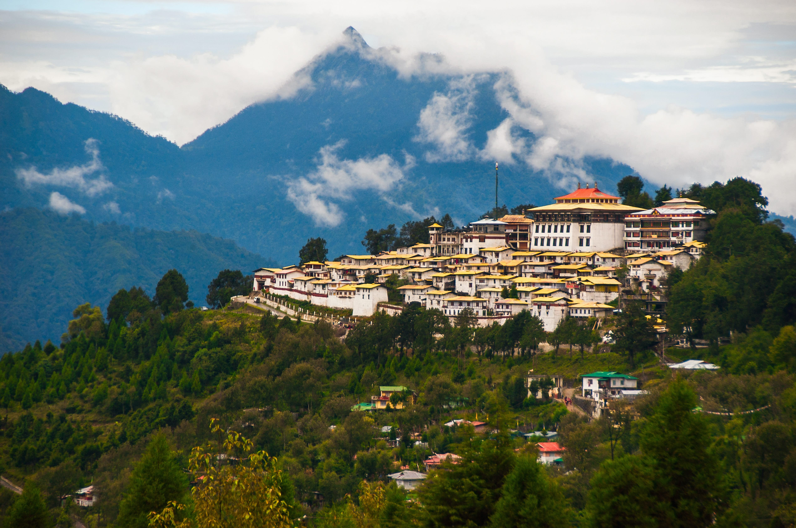
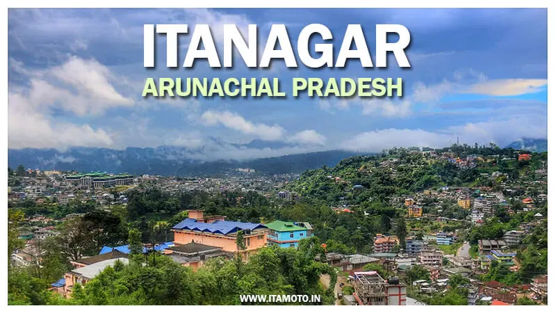
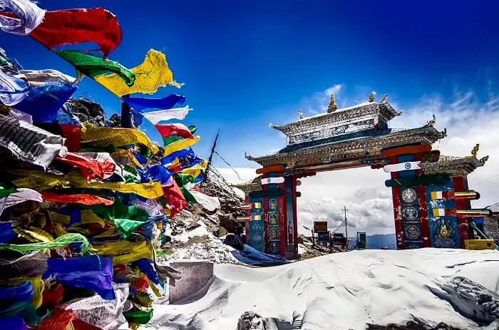
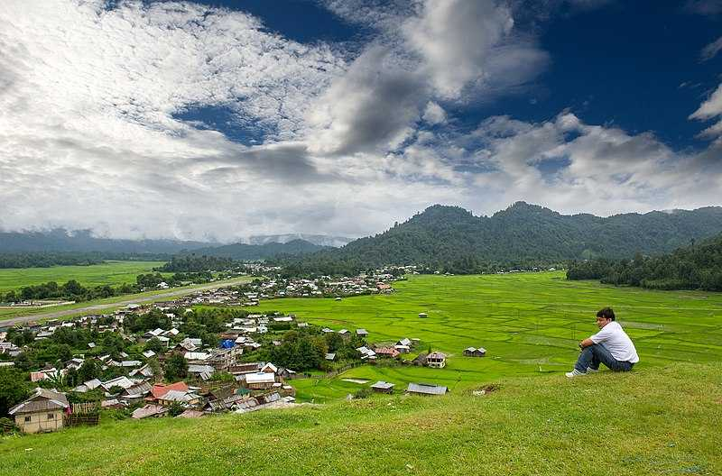
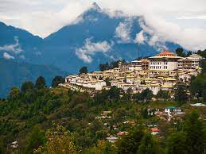
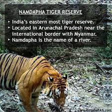
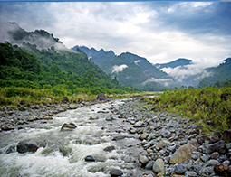
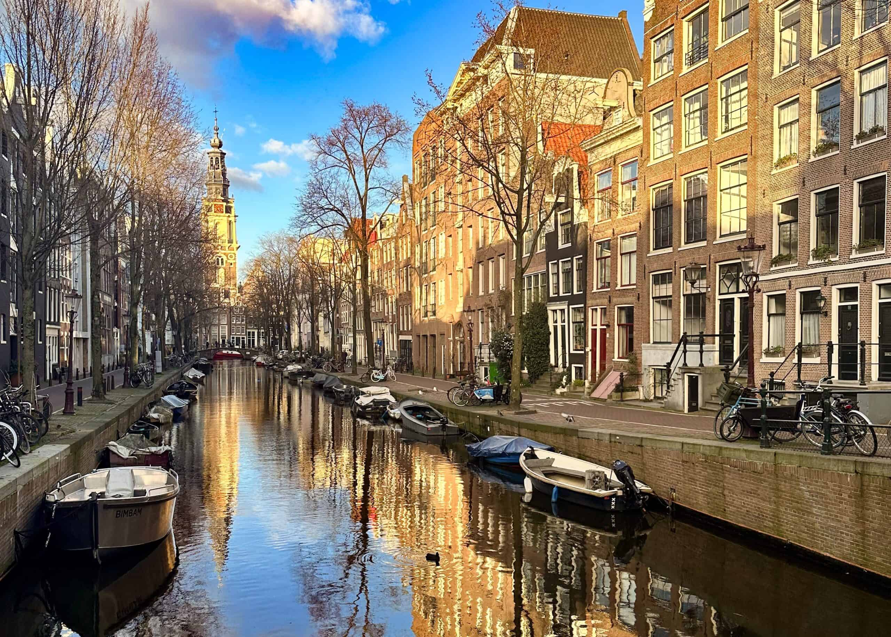
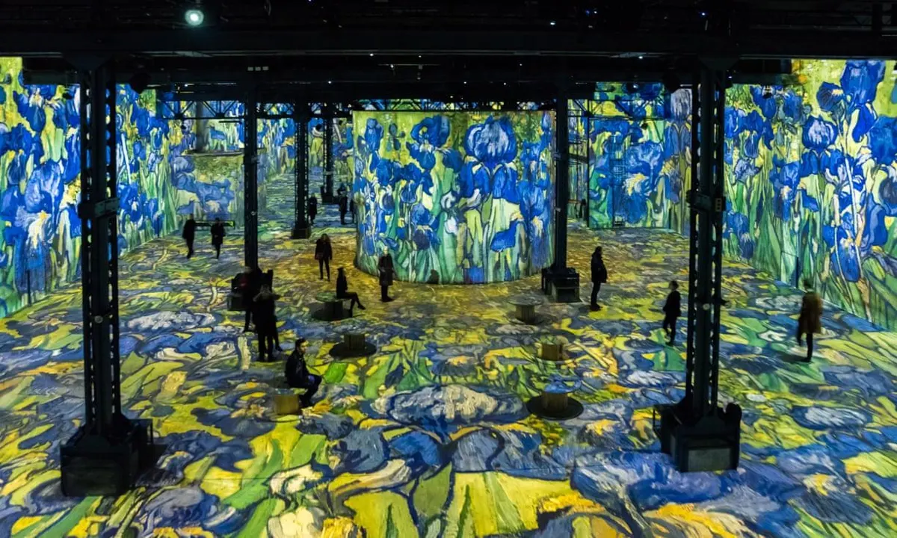

Dream Destinations
My dream destinations include only two places:
Arunachal Pradesh

Arunachal Pradesh is a picturesque northeastern state in India. Known as the Land Of Rising Sun, it is the eastern most state bordering Bhutan to the west, China to the north, Myanmar (Burma) to the east, and the Indian states of Assam and Nagaland to the south. It is known for its stunning landscapes, rich biodiversity, and vibrant tribal culture.
The best time to visit Arunachal Pradesh is during the spring (March to May) and autumn (September to November) when the weather is pleasant, and the landscapes are at their most vibrant.
Places To Visit:
Itanagar: The capital city offers attractions like the Itanagar Wildlife Sanctuary, Ita Fort, and Ganga Lake.

Tawang: Known for its beautiful monasteries, Tawang is a must-visit. Don't miss the Tawang Monastery, which is one of the largest in India.

Ziro: A UNESCO World Heritage Site, Ziro is known for its lush green landscapes, unique Apatani tribal culture, and the Ziro Music Festival.

Bomdila: Explore the Bomdila Monastery and the picturesque landscapes. It's a great place for trekking and adventure activities.

Namdapha National Park: Located in Changlang district, it's the largest national park in India and offers diverse flora and fauna.

Roing: Visit the Mehao Wildlife Sanctuary, Bhismaknagar Fort, and the picturesque Dibang Valley.

Culture and Festivals:
Arunachal Pradesh is home to numerous indigenous tribes, each with its unique culture and traditions. Some of the major tribes include the Apatani, Monpa, Adi, Nyishi, and Mishmi.
Don't miss the opportunity to witness tribal festivals like Losar (Tibetan New Year), Solung, Mopin, and Nyokum, which offer a glimpse into the rich cultural heritage of the state.
.jpeg)

.jpeg)
Amsterdam

Amsterdam is a city with a rich cultural heritage, stunning architecture, and a lively atmosphere. Whether you're interested in art, history, or simply enjoying the picturesque canals, there's something for every traveler to discover in this enchanting Dutch capital.
The best time to visit Amsterdam is from April to September when the weather is mild, and outdoor activities are enjoyable. However, summer months can be crowded, so consider visiting in the shoulder seasons for a more relaxed experience.
Places To Visit:
Anne Frank House: Explore the hiding place where Anne Frank wrote her diary during WWII.
.jpeg)
Van Gogh Museum: Admire the works of the famous Dutch painter, Vincent van Gogh.

Canal Cruise: Take a scenic boat tour along Amsterdam's picturesque canals
.jpeg)
Jordaan: Stroll through this charming neighborhood with narrow streets and boutiques.
.jpeg)
Dam Square: Visit the Royal Palace and the National Monument.
.jpeg)
Rijksmuseum: Discover Dutch Golden Age art, including Rembrandt's "The Night Watch."
.jpeg)
Culture and Festivals:
Amsterdam is rich in cultural experiences, from classical concerts at the Concertgebouw to contemporary art at the Stedelijk Museum. Don't forget to visit the iconic Amsterdam flower market, Bloemenmarkt.Try Dutch specialties like stroopwafels, herring, poffertjes (mini pancakes), and bitterballen (deep-fried meatballs).Explore local markets like Albert Cuyp Market and Foodhallen for diverse culinary delights.Enjoy a canal-side meal at a cozy restaurant or indulge in Indonesian rijsttafel (a rice table feast).
.jpeg)
.jpeg)